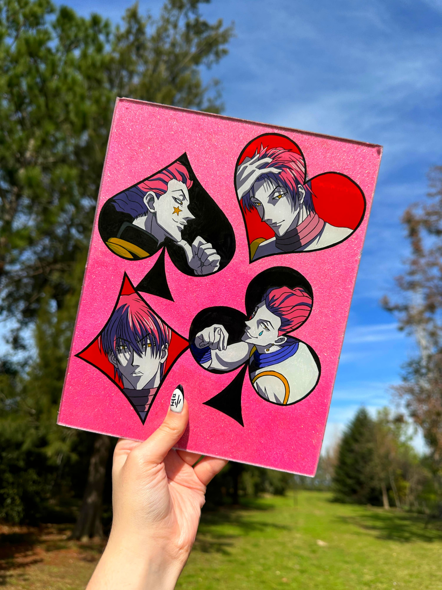
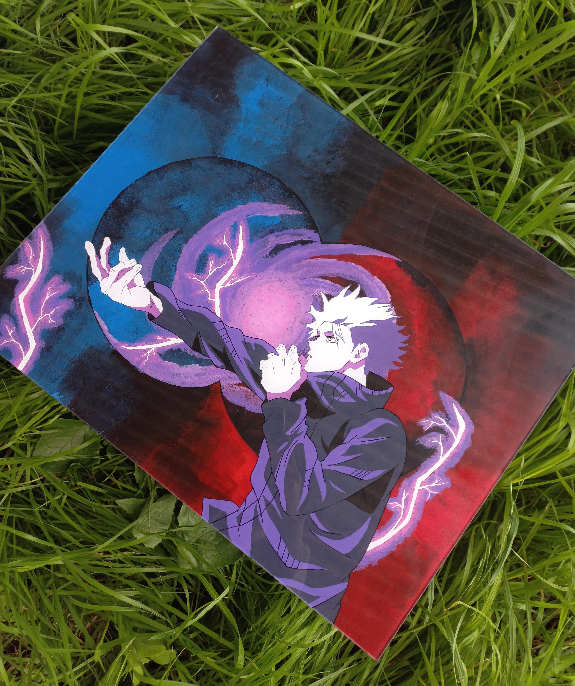
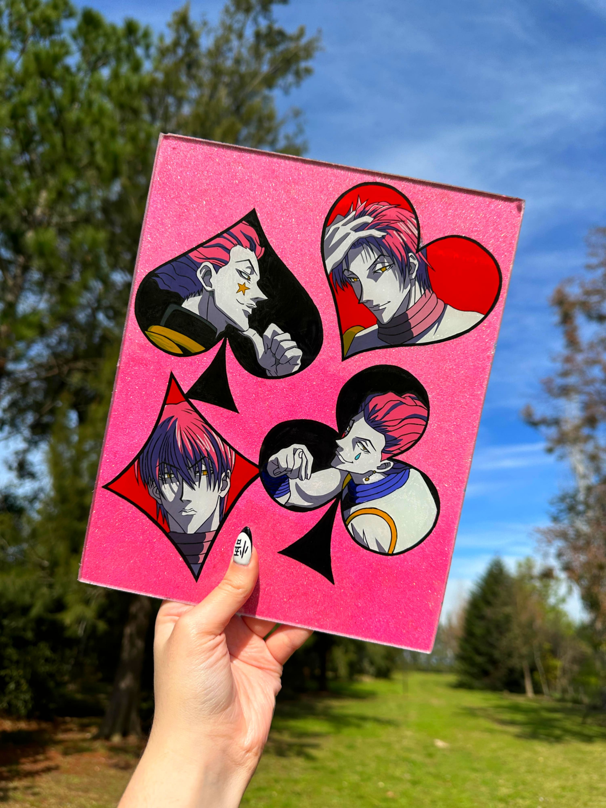
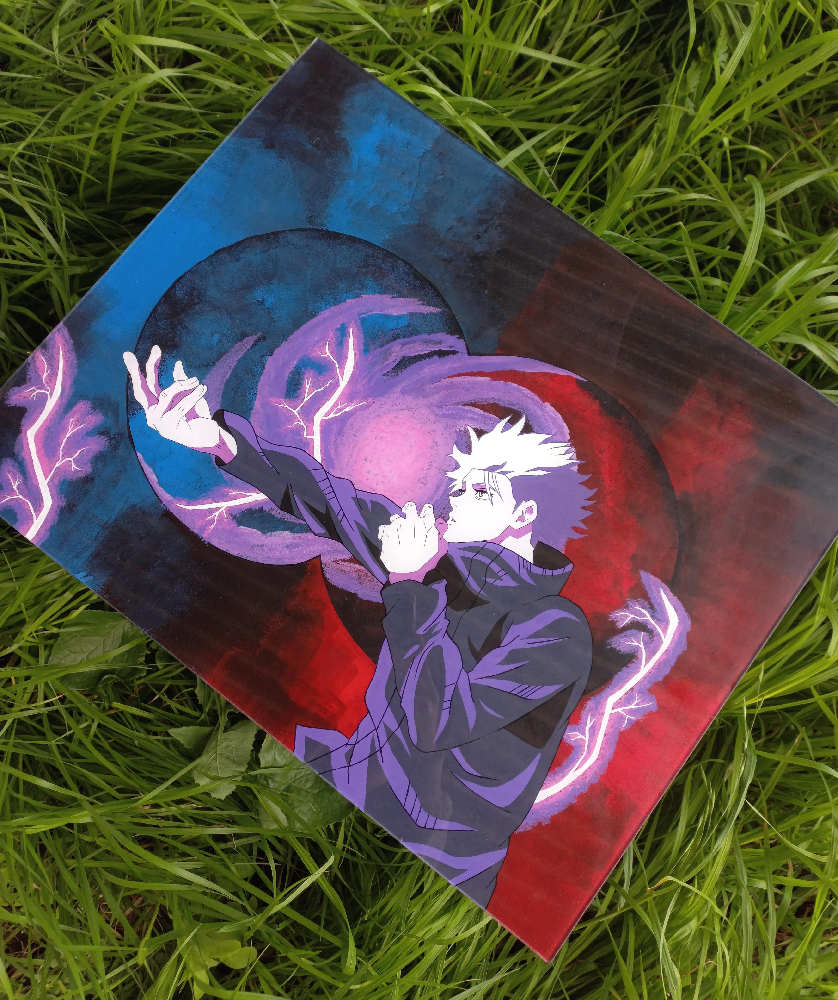
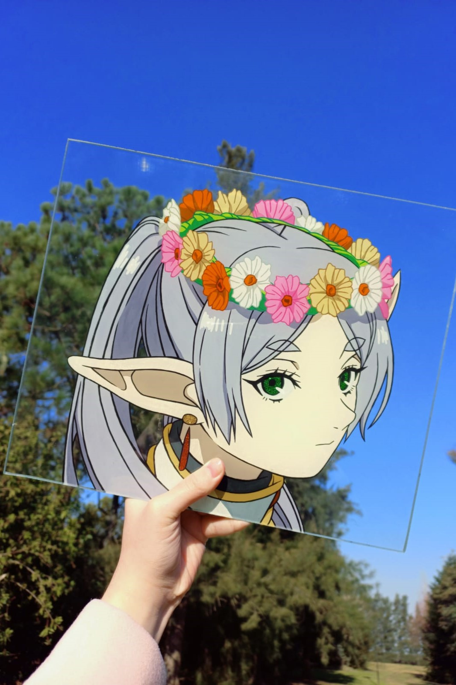
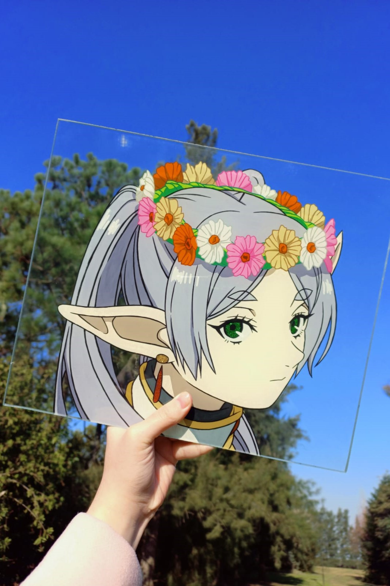

Cuadros De Vidrio
 



 

Los glasspaint (en español, pintura sobre vidrio) son cuadros enmarcables o aptos para apoyar en soportes y son una hermosa decoracion para repisas y paredes. Este metodo se realiza en otras superficies, como el acrilico, pero yo lo realizo sobre vidrio puro de 3mm de grosor, con esquinas y bordes pulidos que evitan los cortes al agarrarlos. Podes pedir en ellos el diseño que quieras, asi como en todos mis productos. Cuento con un listado de medidas variadas.
Fundas

Las fundas cuentan con una alta calidad, antishock resistentes a los golpes y esquinas reforzadas con burbujas de aire para evitar las rupturas al caerse de punta. Consto de un largo listado de modelos donde se encuentran la gran mayoria de celulares. Tambien cuento con fundas rigidas con bordes de color para modelos de celular seleccionados. Estas se pintan por el interior para evitar que se arruine, raye o quiebre la pintura y se barnizan con varias capas para evitar rayones en el celular. Tienen un listado de cuidados especificos que se puede ver en mi perfil de instagram.
Llaveros Acrílicos
Los llaveros son pequeñas formas de acrilico engachadas de una cadena y una argollita sin fin, la cual permite que puedan colgarse en cualquier lugar que se quiera, no necesariamente en llaves. Estos vienen en forma de circulo, cuadrado, rectangulo, corazon y estrella, todas las formas son de aproximadamente 5cm. En estas diminutas superficies, solo acepto diseños sencillos; como por ejemplo caritas, medias caras, logos, dibujos pequeños y no muy detallados.